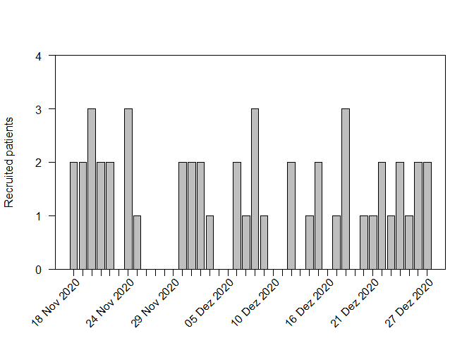

Accrual plots are an important tool when monitoring clinical trials. Some trials are terminated early due to low accrual, which is a waste of resources (including time). Assessing accrual rates can also be useful for planning analyses and estimating how long a trial needs to continue recruiting participants. accrualPlot provides tools for such plots
Installation
You can install the development version of accrualPlot from github with:
Note that remotes treats any warnings (e.g. that a certain package was built under a different version of R) as errors. If you see such an error, run the following line and try again:
Overview
The first step to using accrualPlot is to create an accrual dataframe. This is simply a dataframe with a counts of participants included per day.
# load package
library(accrualPlot)
#> Loading required package: lubridate
#>
#> Attaching package: 'lubridate'
#> The following objects are masked from 'package:base':
#>
#> date, intersect, setdiff, union
# generate some data
set.seed(1234)
x <- as.Date("2020-12-07") + sample(c(-20:20), 50, replace = TRUE)
df <- accrual_create_df(x)Cumulative recruitment

Recruitment per day

If we know that we started recruiting on the 1st November, we can add this information.
# accrual_plot_cum(df, start_date = as.Date("2020-11-01"))
plot(df, start_date = as.Date("2020-11-01"))
Multiple sites can also be depicted…
site <- sample(1:3, 50, replace = TRUE)
df2 <- accrual_create_df(x, by = site)
# accrual_plot_cum(df2)
plot(df2)
It is also possible to predict the time point at which a certain number of participants has been recruited (for estimating when a study will be complete). If we want to recruit a total of 75 participants, we can put that in the target option.
accrual_plot_predict(df, target = 75)
# accrual_plot_predict(df2, target = 75) # does not seem to work
plot(df, "predict", target = 75)
Table of recruitment, with or without a descriptive header.
# accrual_table(df)
summary(df)
#> start_date time n
#> First participant in Months accruing Participants accrued
#> 18Nov2020 1 50
#> rate
#> Accrual rate (per month)
#> 38.46
summary(df2)
#> name start_date time n
#> Center First participant in Months accruing Participants accrued
#> 3 19Nov2020 1 15
#> 2 21Nov2020 1 19
#> 1 18Nov2020 1 16
#> Overall 18Nov2020 1 50
#> rate
#> Accrual rate (per month)
#> 13.64
#> 15.83
#> 12.31
#> 38.46
summary(df2, header = FALSE)
#> name start_date time n rate
#> 3 19Nov2020 1 15 13.64
#> 2 21Nov2020 1 19 15.83
#> 1 18Nov2020 1 16 12.31
#> Overall 18Nov2020 1 50 38.46